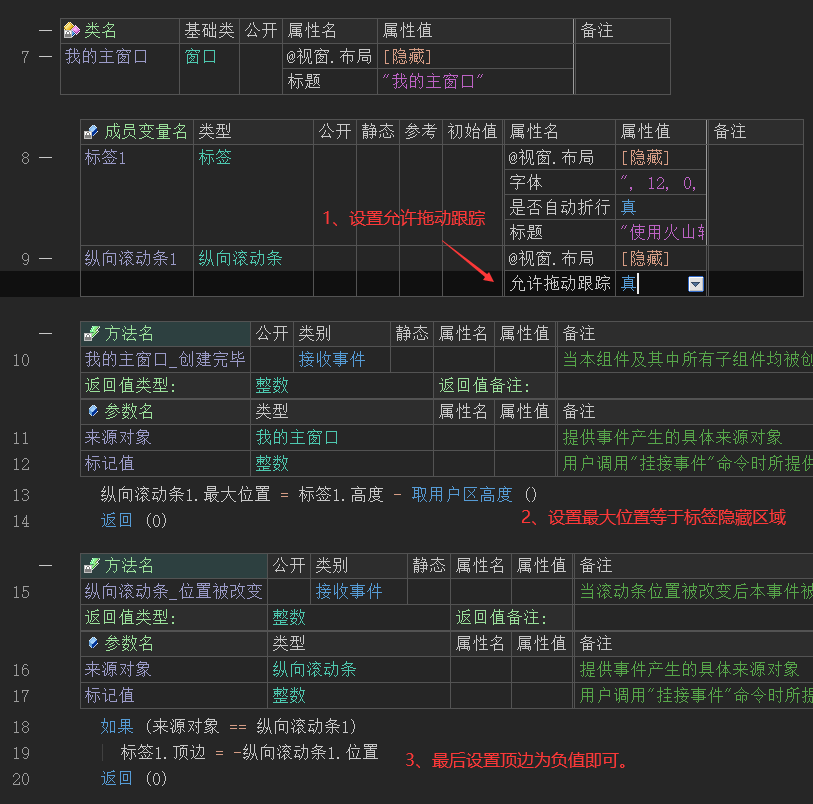
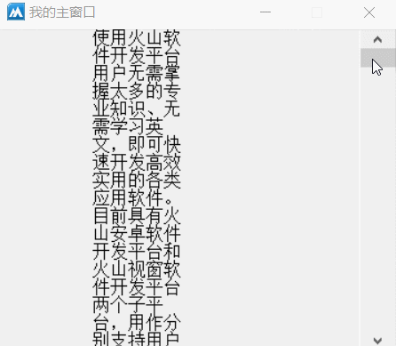

作者：创世魂
● 概述
本组件主要用于为其它组件提供一个纵向滚动能力，让其组件能纵向展示更多内容。
因本组件的所有方法和“横向滚动条”全部一致，因此本篇教程不在介绍具体方法的作用，直接采用一个简单的案例来介绍其主要作用。
● 案例
利用其滚动特性实现一个纵向滚动其它组件的效果。
代码编写如下图：
1、首先设置“允许拖动跟踪”属性值为真。
2、添加主窗口“创建完毕”事件，设置滚动最大位置为标签组件的隐藏区域的尺寸。
3、添加纵向滚动条的“位置被改变”事件，设置“标签1”组件的顶边为负的当前位置值。

运行效果如下图：
最终当操作滚动条的时候，标签组件也会跟随滚动。
